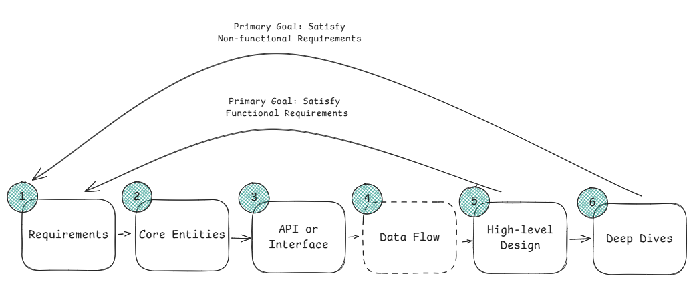
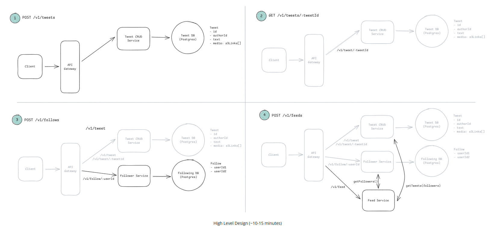

Fundamental of System Design.
Thumb rule.
Learn the most important thing and connect with the real system and problem rather than accumulating academin knowledge.
Avoid - ❌ Too shallow and ❌ Too deep (over-engineering)
Get the ambiguously defined high level problem and break it down to small piece of infrastructure and solve it.
System Design Type - Product design(Uber) and Infrastructure Design (Rate Limiter).
The interviewer is looking to assess some skills and knowledge throughout the interview go through the thought process and give them points to evaluate.
First target - complete the full design with the requirements.
Next work through all the basics and then discuss the depth of the knowledge in deep dives.
🧠 Mental Model
Problem Navigation, Solution Design, Technical Excellence, and Communication and Collaboration.
Problem Navigation.
Explore the problem and gather requirements. Avoid unnecessary depth. Example - Dont waste too much time in the user table.
- Identify the core problem early
- Gather requirements before design
- Focus on important parts, ignore noise. Get the uninteresting vs the imp points.
- Don’t get stuck on one component and not able to move forward.
- Always deliver a working system
Maintain the delivery framework to be in track.
Solution design.
Make small part of the problem and interview wants to see how you solve each pieces. Imp to implement core concept.
Example - The multi layered cache is an elegant solution to the massive read volume.
Most common pitfalls.
- Not enough understanding of core concepts and ignore scaling and performance.
- Spaghetti design - solution not well structured and difficult to understand.
Dont memorised answer they will ask probing your reasoning, doubting your answer and tradeoffs.
Solid fundamentals and depth of knowledge will help.
Technical Excellence.
To design great system you need to know best practices, well-recognized patterns, current technologies and how to apply them.
Understanding of key technologies. Get a strong command of Redis, Elastic Search and Inverted Indexes.
Most common pitfalls.
- Not knowing available technologies.
- Antiquated approaches or being constrained by outdated hardware constraints.
- No idea on how to apply in the problem.
- Not recognizing the pattern and best practices.
Communication and Collboration.
Dont be defensive on alternate approach.
Dont be argumentative with feedback and dont get lost in the weeds and not be able to find the working solution with the interviewer.
Delivery Framework.
Structure your thoughts and focus on most imp parts.
Dont fail to design a working system and it will give a common like “time management” no need to fast its mainly focus on right thing.

Delivery Framework.
Requirements - 5 mins.
🎯 Functional
- User/client should be able to do feature
- Ask targeted -
- Does system need X?
- What if Y?
- Get prioritized core features (Top 3 points). Keep it strategic, not long list it will create problem.
- The target is to make the system to complete the requirements.
3W Framework
- Who (Producer) → Who sends data?
- What (Request) → What data? contents?
- Where (Outcome) → Desired output/event?
⚙️ Non-Functional Requirements.
- System qualities. The questions like - The “System should be able to”.
- Key -
-- Read/Write heavy.
-- Partitioning.
-- Consistency.
-- Availability.
-- Durability.
-- Latency.
Dont make it generic - The system should be low latency - every system feature. Make it specific and target to the system like the system should have low latency search <500 ms. It identifies the part of the system that needs low latency and provides target.
Identify the top 3-5 NFR that can be considered.
The most common NFR.
Fault Tolerance - Redundancy, Failover and Recovery Mechanism.
Compliance - Legal or regulatory things the system to meet - industry standard and data protection.
CAP - System prioritize C or A (P always exists).
Scalability - Get inn case there is any specific scaling in the system - does the system have bursty traffic at any specific day ?Does the system need to scale in read or write.
Latency - The time system will take to response to the user request. Low latency search in designing Yelp.
Environment Cnstraint - Any consraints like the system should run in low battery, or limited storage or limited bandwidth.
Durability - How imp is i that the data in the system is not lost? Social media can loss some data.
Security - How secure the system to be - data protection, access control compliance with regulations.
FCC SLEDS - Furry Cat Climbs Steep Ledges Every Day Securely.
Capacity Estimation.
- Do only if it influence design.
- Usually distributed → can skip upfront.
- Tell the interviewer that you will do math during design
Example - Design top K systems for trending topics in post. In that case the calculation impact the structure. In case of single topic to see the post then the min-heap and in case you need to get multiple instance then shard.
Get estimation understanding its better to design the tradeoffs. The estimation is called Fermi estimation. Estimation helps you in the quantitative part of the design.
Key Question -
- How much storage the design need.
- Data transfer time.
- Memory required.
Communicate the thought process, reasonable argument, ask relevant things.
The estimation is not mandatory but the estimation strengthens the quantitative backing.
Things like how long the data transfer take? How much memory will this feature require? In the cases make an educative guess. It highligh quick decision and good instincts a sign of exp.
Steps.
Determine what to estimate (quantity that is taking more load) - Break it down - Use what you know (apply fact you are confident) - Keep it simple (Precision is not the goal the ballpark is the goal) - Verify.
what to estimate - The journey to the estimate will improve the design. Where to apply estimates is a part of intuition want to demonstrate in the interview. Get the hint in case interviewer is asking to specific quantities. The best part is use the estimation in the crux of the system - any specific problem in the system.
Example in Twitter search the main part is the search indexes - understanding the contraints will help to decide what will be in memory and what on disk.
The crux of most of the design - Get the value of r and w troughput of the system and total storage of the system like memory and disk.
Break it down - Example twitter search and the search index storage size. Use dimensional analysis to create a mental graph of the quantities to develop. (Get more about it).
Get the start point - Tweets are 150 characters (storage/tweets) and Daily Active User O(250M) (users/day). In case we know tweets/users then we get the size.
(storage/tweets) * (tweets/users) * (user/day) we can get the storage/day.
Facts to know.
1 byte - 8 bits.
1 Thousand ≈ 1 KB ≈ 1000 bytes (1000^1 or 1024).
1 Million ≈ 1 MegaByte ≈ 1000000 bytes (1000^2 or 2^20 or 10^6)
1 Billion ≈ 1 GigaByte ≈ 1000^3 (10^9).
1 Trillion ≈ 1 TeraByte ≈ 1000^4 (10^12).
1 Quadrillion ≈ 1 Peta ≈ 1000^5 (10^15).
Stick with the factor of 1000 and get comfortable with the how much space would 5 million 1 kb records take - 510^610^3 = 5*10^9 = 5GB.
Latencies - Intuitions about latency.
Reading 1mb sequentially from memory - 0.25ms.
Reading 1mb sequentially from SSD - 1 ms - 4x memory.
Reading 1mb sequentially from spinning disk - 20 ms - 20xSSD.
Round trip network latency CA to Netherlands - 150 ms.
https://gist.github.com/jboner/2841832
SSDs are fast and affortable. Many severs work can be done by SSD.
Storage - The sample storage of media.
2 hour movie - 1GB.
Book of plain text - 1MB.
A high resolution photo - 1MB.
A Medium resolution image or site layout graphic - 100kb.
Business - The interviewer will give a figure for the system.
Active User of social network - O(1KB).
Hours of videos streamed on Netflix per day - O(100M).
Google searches per sec - O(100k).
Duration - Estimation should take max 3 min of the 35 min interview.
Dont continue estimating irrelevant task. Not to get stuck in basic math. Not to get the quantities wrong.
Good estimation muscle comes by estimating.
Candidate who proactively estimate seems more experienced and senior.
Entities - Approx 3 mins.
Get the entities to get the term and the data central. The entities get exchange by the API and the system will persist the entities. It mainly like putting the bullet list.
At this point dont design the data model and more entity and relationship will come at the time of design.
When the high level design is done then you will understand what stae needs to update on each request and get the list of relevant columns or fields for each entity.
Twitter example - entity - User, Tweet, Follow.
To identify the entity ask the actor of the system and are they overlapping. The noun or resource needed to fulfill functional requirement.
API System Interface - Approx 5 mins.
Which API protocol to use - REST, GraphQL (Client spefy what data they need avoiding over and under fetching. Used when diverse client with different data need), RPC(Remote Procedure Call - Action oriented protocol that acts faster than REST for service to service communication), Real Time use WebSocket.
API Design - The authentication is derived from the header and not the body and the url is plural tweets and not tweet (/v1/tweets).
Data Flow - 5 mins.
In data processing systems describe the high level processing of the system on the input to produce the output. Mention it when the system involve long flow of action then mention in the data flow.
The data flow define in a list and use the flow in high level design. Example - web crawler the picture will be - Fetch seed URL, Parse HTML, Extract URL, Store data and all.
High Level Design - 15 mins.
Comfortable in the entity, api of the system - proceed with the High Level to represent how the different component of the system interact with each other. Component of the system - server, db, cache.
Key technology idea will give more value in the component architecture.
Dont over think here - the target to satisfy the API and fulfill the requirement. Go with one by one API endpoint and build the design to satisfy each one.
Dont make it complex now - target to serve 100 customer with the functionality then layer to serve the non-functionality.
In the high level designw e can identify the places to add cache and message queue at this point callout or note it and move on.
Be loud and tlk the thought process and show the data flow and the state (db, cache, message queue) change with each request starting from the API request to the response.
The data movement and a sample return value and the column name to show the data state - cache what to store how long to store, db what to keep and rest api what to return - all this in short then in depth we can talk based on the interviewer interest.
When the data reaches the db start the entity and column name it will help to improve the design.
Dont waste time like User Table so add some basic and name number and dont continue anything that is not relevant.

Deep Dives.
The twitter example is inefficient to fetch user feed. In the deep dive we need to solve it. In deep dive meet the non-functional requirement, addressing edge case, identify issue and bottleneck, improve the design based on the interviewer.
The degree of the proactiveness in deep dive is the function of seniority.
Junior will expect the interviewer to point out the places system will break. More senior will find these places by themselves and leading the interview.
System need to scale >100 M DAU. The solution is arounf horizontal scaling, cache, db sharding - update the design. Feed need to fetch with low latency - fanout-on-read vs fanout-on-write and the cache.
The understanding of the flow and the return that will be low comes with experience and idea in the system. Cache return in single digit ms, a relational db in 30-50ms for simple queries and web server 10-20 ms when there is no heavy processing then the limit is within 100 ms window.
Senior engineer should talk here there are lot to talk but maintain balance and give the interviewer time to ask on your design. They need to judge you on target so get the input from the interviewer.
Add metrics and monitoring in the deep dive.
The System design Interview is more like winning the interviewer heart. Go along with his doubts and question and make all his comments answered.
Make the discussion compact.
Core Concepts.
Networking - You should know the parts that are useful for the distributed system. The basic - how services talks to each other, choose the communication protocol. Most default - HTTP over TCP.

Websockets and SSE (Server Sent Events) are needed for real-time updates. HTTP polling is also used for pushing real time update - simple not efficient.
The real time update in the server side has option like Pub/Sub(decouple the publisher and subscriber - whatsapp message broadcast and send to the subscribers) and Stateful server(organized in consistent hash ring - used when processing is heavy - hold and manage state like documenta edits, session data and collaborative change like docs)
The main point of real time update - How the update will propagate to client (Websockets, SSE, Polling) and how does the server get triggered when update happens (pub/sub event driven).
| SSE | WebSockets |
|---|---|
| Unidirectional. | Bidirectional. |
| The client makes an initial HTTP request to open the connection and server pushes data down the connection. | Websocket when the clients need to push data back to the server. |
| The client cannot send additional data over the SSE connection. | The client and server both side messages send freely. |
| Example - live score and notification. | Example - Chat app or live collaboration. |
SSE and Websockets are stateful connection and we cannot put them behind a load balancer - need to think about the connection persistence and solution when a server goes down with many active connections.
gRPC - Internal service-to-service - It uses binary serialization and HTTP/2 making it faster than JSON over HTTP. It cannot be used in public facing API as browser does not support gRPC. (gRPC - Web exists but it needs proxy and does not support all features).
REST for external and gRPC for internal.
LB - Layer 7 operate at the application level and route based on the HTTP request content. API call to one service and HTTP request to another server.
Layer 4 works on TCP faster and dumber as it does not look into the content. Websocket need L4 as it need persistent TCP connection.
Mistake - Dont mention websocket on HTTP with long polling when mentioned “real time” system. Websocket add significant issue to maintain stateful at scale.
Latency - A request from New York to London will take 80 ms (speed of light) to travel without any processing. System to maintain low latency - deploy in regions with data replicated or partitioned by location. CDN - solution to serve static content from edge server close to users.
API Design.
In the API design put 4-5 endpoints max 5 mins. Taking more time its a signal that you are going more deep.
Returning large result set then pagination.
Cursor-based works for real time data when new item gets added more and offset-based works in most cases.
Authentication JWT token for user session and API keys for service to service call. In case system face issue with bot then rate limiting.
Data Modeling.
SQL - complex queries, transaction to keep data consistent, foreign key constraints.
No Sql - horizontal scale across many servers without complex joins.
SQL has normalization and denormalization. Normalization meaning splitting data across tables to avoid duplication. Example user table, order table and product table. Each order has a reference of user and product id. It keeps the data consistent and less write. The order will have the user and product in each record. Any update in the user the update the user table and no need to update all the related order in order table. It means to get the complete data it need joins. Joins are expensive when the table is huge and there are multiple table.
Denormalization duplicate the data to ake read fast. To avoid the join to the user table every record in the order store the username. To get the data no need to join. The downside is updates. Any user chnage then update the user table and lla the order record that used it. System with read heavy and data does not change will use it.
Most default is normalization relational db - then denormalize in case of read performance issue.
Nosql think in different way DynamoDb need partition ket and sort key on the access pattern.
In case the most common query - Get all posts of user X then user_id is the partition key to make fast single partition lookup.
The issue is when the query is get all posts mentioning hashtag Y then need to scan entire table as the design is not for the access pattern. Need to know the query upfront and design around them.
Database Indexing.
Find user by email in case no indexing then scan 10M row and using index on the email then it will go to the row in ms.
The common index B Tree. Data in sorted tree structure that support exact lookup(find user with email) and range query(find all order between date A and B) Relational db perform B tree index. Hash index - faster for exact but not support range query. Specialized index full text index (finding documents containing specific words) and geospatial index for location queries(restaurant within 5 miles).
Identify the query pattern and put index in the field you are querying frequently. Example - Fetching the user by email id for authentication its better to index the email column. Fetching users order its better to index the user_id column in order table. Fetching the composite queries “find events in San Fransisco on DEc 25th” its better to index on compound index on both city and date.
ElasticSearch is a go to search for full text search (searching tweets or documents), Geospatial queries in postgres PostGIS extension.
The external indexes typically sync from your primary db via the CDC the data will lag a bit but not issue in case of most of the system.
Caching.
Db more read then store the data in fast memory Redis. A cache hit in Redis is 1ms compared to 20-50 ms for db query.
Most of the time its cache-aside Redis. On read get the data in cache in case not get it in db and store in cache with a TTL and return it. Good in read heavy system.
The complecity is invalidation. When an user update the profile in db then it need to be deleted in cache copy to not return any stale data. There are ways - invalidate the cache after every write, use short TTL and return a bit stale data.
There are some cases like when Redis goes down all request will hit the db will it be able to manage the spike. Its called cache stampede. There are ways - a small in-process cache as a fallback, using circuit breaker to prevent the db call and accep drgraded performance until Redis goes down.
Cache is good when its read heavy and the data getting update in every write then its more latency and complexity.
CDN cache is for static image, video and file served from edge location closer to the user. In process cache works for small values that change sometime like feature-flag(disnet ipl live the personalized home page for all user is a feature flag and they turn it off at peak load), config data. In core application external cache with Redis is the default.
Sharding.
The size limit hit like TB in single postgress instance, write throughput limit(10k writes per second) or read that replica cant handle.
Example user table like 1-10M in shard 1 , 10-20 M in shard 2 and 20-30 M in 3rd shard.
The shard key determines how data gets distributed and affect all design. Example in user-centric app like Instagram shrd by the user_id then all post, likes and comments in one shard. User specific query will be fast. The queries like “trending posts across all users” will be expensive as it will hit all shard.
Hash based shard key and use modulo to pick the shard. It will distribute the data evenly and not creating hot spots.
Range-based sharding in case the access patterns partitions (like multi tenant SAAS where each company query their own data) and it will create hotspot when shard gets more traffic.
Directory - based sharding uses a look up table to decide where data lives. Not good as it adds dependency and latency to every request.
10k writes per sec with 100Gb data no need to shard.
Cross-shard transaction is not possible - design shard boundaries - User transfer in the banking app need upadting accounts on diffrent shard then need distributed transaction or sagas its slow. Hots spot will hammer one shard - Taylor music release will hit one shard.
Consistent Hashing.
In hash based distributed system we do hash(key)%n to get the server to store the data when a server loss or add then the n change and all data map to different server.
Consistent hashig fix it by putting in a virtual ring. When one serevr remove or add the key will rotate clockwise and get the next server. The key between the new server and key will get the new data.
In modulo hashing the adding of one server to a 10 server cluster meaning 90% of the data will be moved and in consistent hashing it will move 10% the key that belong to the range.
The pattern is used in distributed cache - memcache and redis cluster to distribute key across cache node. Distributed cache like cassandra and dynamodb used it for sharding. CDN uses it to route request to edge server. No need to go in depth of the work in interview in case not asked.
Mention like use consistent hashing to distribute data across cache node when it is about distributed cache or use consistent hashing for the shard key when its about db sharding.
CAP.
consistency - network partition happens then it refise to serve request than returning stale data.
Social media and all default is availability and it cannot handle few second of system down. They prefer eventual consistency.
There can be different consistency at different part of the system. Example - product design update can be eventual consistency and inventory count needs to be strong consistency.
The real tradeoff is the consistency and availability. It is captured by PACELC theorem - In a partition pick Availability or Consistency Else Latency and Consistency. It means even when the network is good a strong consistency adds latency as nodes need to coordinate before responding.
In design when replication or distributed data comes pick eventual consistency unless it involves money, inventory.
Numbers to know.
Understand modern hardware capabilities.
When to shard, when to cache, handle large object - the hardware idea. Will it be possible for a single redis instance to handle the cache load? - To answer we need to have some idea of the number.
Modern server has good computing power. A db server handles 10K queries/sec.
AWS EC2 M6i instance has 512 GiB of memory and 128 vCPUs.
EC2 is the virtual server instance.
Memory optimized instance X1e32xlarge provide 4tb RAM and U24tb1.meal reaches 24 TB of RAM. There are many system which initially needed distributed system not can run in single machine.
Storage system AWS i3en.24xlarge provide 60TB of local SSD storage, the D3en.12xlarge - 336TB of HDD storage for data heavy workload. Object storage like S3 is effectively unlimited handling petabyte of data as standard price.
Network capabilities - In a datacenter - 25Gbps is common for standard instances - max 50 to 100Gbps.
Cross Availability zone band width within a region is limited by the instance network capacity. The NIC (Network Interface Card) the virtualized hardware that connects the instance to the AWS.
Latency - 1 ms within an AZ, 1-2 ms across Availability Zone in the same region, 50-150 ms cross region.
There is no need to split the db at 100GB or avoiding large object in memory.
Cache - Modern cache can handle terabyte scale daasets with a <10 ms latency and single instance cover 100k ops/sec. The ability to cache entire db in memory event at 100s of GB helps avoid partial caching schemas. The scale need appears at the ops/sec or the network and not in the storage.
Database.
Single PostgresSql instance handle dozens of terabyte of data with ms level response time. It can handle 10k transaction/sec bottleneck being ops concern and not performance limit.
The single instance does not mean a single point of failure in practice there will be read replica for availability.
500Gb does not need sharding.
A single Redis instance >100K pers second.
Start with the latency number it affect most in design.
Memory takes nanosecond.
SSD reads take microseconds.
Network calls within a data center 1-10 milliseconds. Cross continent call take 10-100 ms.
The number is imp to come to the conclusion - cache or the complexity of geographic distribution is worth it.
Do the calculation when needed - Interviewer ask how many serevr needed? then pull out the numbers.
Example - We are expecting 50k requests per second - each server can handle 5k requests - need 10 servers and some headroom.
Storage capacity matters for sharding decision. A single postgress instance handle few TB of data. No need to shard until we ht 10-100 TB of data. Proposing sharding at 500GB of data is a massive complexity for no reason.
Application Server - Modern backend can handle 100k open client connection. Its not on RAM its on CPU. The JSON parsing, auth, business logic, rendering, encryption server runs out of compute than memory.
The trend of stateless service is valuable for scaling - the point is server has substantial memory available. To leverage the memory - local caching, in memory computations, session handling.
CPU will be the bottleneck and not memory. When need to scale we can spin new instance in cloud in 30-60 sec for containerized app.
Component and metric.
| Component | Key Metric | Scale Trigger. |
|---|---|---|
| Caching | - ~1 millisecond latency- 100k+ operations/second per instance in inmemory like Elasticache redis. - Memory-bound (up to 1TB). - 100-200k |
- Hit rate < 80% - Latency > 1ms - Memory usage > 80% - Cache churn/thrashing. |
| Databases | - Up to 50k transactions/second (read) and 10-20k TPS in single node for write. - 1-5ms read latency (cached), 5-30ms read latency for disk (optimized configurations for RDS and Aurora). The write latency 5-15 ms for commit latency. - Single instance ca handle upto 64 TiB+ storage capacity. Aurora supporting up to 25TiB. - 5-20k concurrent cnnections depending on db and instance type. |
- Write throughput > 10k TPS- Read latency > 5ms uncached- Geographic distribution needs.br>Consider sharding or scaling - db size nealy 50TiB, write throughput consistently exceeding 10k TPS, read latency below 5ms for uncached data, Cross region replication and the backup or recovery that needs an hours. |
| App Server | - 100k+ concurrent connections. - 8-64 cores @ 2-4 GHz. - 64-512GB RAM standard, up to 2TB high memeory instance. - Network 25Gbps standard and max 50-100Gbps. - Start up time of 30-60 seconds for containerized app. |
- CPU > 70% utilization- Response latency > SLA- Connections near 100k/instance- Memory > 80%. Horizontal scaling when - CPU utilization above 70-80%, Latency exceeding SLA, Memory usage above 70-80%, Network bandwidth approaching instance limits. |
| Message Queues | - Up to 1 million msgs/sec per broker. - 1-5ms end-to-end latency. - Message size 1KB-10MB. - Up to 50TB storage per broker. - Week to infinite data retention depending on disk capacity and configuration. |
- Throughput near 800k msgs/sec. - Partition count ~200k per cluster.>br>- Growing consumer lag. |
Needs to upgrade when Dataset size approaching 1TB. Sustained throughput 100k+ops/sec and read latency need below 0.5ms consistently.
The numbers will help in better scaling decision - Single db can handle TBs of data. Cacahe store entire datasets in memory. Message Queue are fast enough for synchrnous flows. Application server have enough memory for local optimization.
Application server uses RAM - a mid-sized e-commerce site could run with application servers storing shopping carts and user sessions in memory. As long as traffic is manageable and servers have enough RAM, this avoids the complexity of distributed caching systems.
Common mistake.
Premature Sharding.
Example In Yelp - 10 M business and 1 Kb of data and 10X review total = 10M1kb=10GB10= 100GB. It can be store in the same db no need to shard.
Example - Leetcode leaderboard 100K competition - 100K user participate = 100k100k(36B ID+4B float rating) = 400GB. It can be set in single large cache no need to shard.
A good modern rule of thumb is around 1 TB for a single large in-memory cache.
Overestimating latency.
Dont overestimate latency to query an SSD for a simple key or row lookup. It is millisec range for indexed lookups. Adding cache layer is good to cache extensive queries.
Over engineering given a high write throughput - System with 5k wtites per sec no need to add a message queue. A well tuned Postgress instance good write 20k+ writes per second. Things that limits write capacity - complex transaction, spanning multiple table, write amplification from excessive indexes, writes that triggers expensive cascading updates, heavy concurrent reads competing with writes.
Message queue become valuable when need guaranteed delivery of message, event sourcing pattern, handling write spikes (above 20k+ write for a single postgres instance), decoupling producer from consumer.
Single postgres instance refers to the single running postgress process in one machine or VM or container and not in cluster or distributed set up. Multi instance set up like read-replica set up, distributed db where the throughput is distributed across multiple servers.
Prior to message queue consider simple solution like using fast SSD, lots of RAM, strong CPU and batch write, optimising schema and index, using connection pooling, async commit.
Key Technologies.
Focus on breadth before depth. Junior breadth and senior depth.
Elastic search - search index, describe the inverted index or the reason about its scaling is an issue - depth knowledge.
Core database.
Storing the data in db or blob storage.
Product design - relational db (postgres).
Infrastructure design - NoSql(DynamoDB).
Dont go to the discussion of the SQL vs NoSql.
NO SQL.
Key value store - Fast access and simple model.
Document Store - Flexible.
Column Family Store - High performance for write.
Graph - db - Efficient retrieval.
Dont think that the thing SQL can do noSql cant or vice versa. SQL can also have a json column and store the data in any order.
The correct architecture the SQL can also scale horizontally.
Nosql also perform indexing like B-Tree and Hash Table index.
Nosql scale horizontally using consistent hashing or sharding. Dont make any claim.
Cassandra is good in write heavy workloads as its append only storage model.
Blob Storage.
- Store unstructured blob of data like image, videos, files.
- In traditional db it will be expensive and inefficient.
- Use blob storage service like Amazon S3 or Google Cloud Storage.
- Upload the blob of data and the data is stored and get back a URL and the URL can be used to download the blob of data. The core db will store the blob url.
- The blob storage works with CDN and we can get fast downloads. Upload the file (origin) and use a CDN to cache the file in edge locations.
Dont use blob storage as primary DB. It is a set of blob and Postgress or Dynamodb that points to the url to the blob stored S3.
The db to query and index the data with low latency and get the blob storage.
Example - Youtube (Store the videos in blob and the metadata in db) Instagram (Store the image and video in blob storage and metadata in db) Dropbox (Store the files in blob and metadata in db).
Upload - Client want to upload a file - request a resigned URL from the server, server sends and recorded it in db. - Client upload the file in the url and blob storage trigger a notification to the server the upload is complete.
Download - Client request the file to the server and it returns the URL. - Client uses the url to download teh file via CDN which proxies the request to the blob.
Things to know about Blob storage.
| Properties | Details. |
|---|---|
| Durability | Durable. Follow replication(data in leader-follower or multi leader). Data is safe in case of disk or server fails. |
| Scalability | Infinetely scalable within the limit of the account. |
| Cost | Cost effective. |
| Security | Encryption in rest and in transit. There is access control feature. |
| Upload and download directly from client | Its a good ppoint for application that has large blob of data. The preassigned URL give temporary access to a blob - either for upload or download. |
| Chunking. | Chunking to upload large file in smaller pieces. Resume an upload and also upload file in parallel. S3 support with the multipart upload API. https://docs.aws.amazon.com/AmazonS3/latest/userguide/mpuoverview.html |
Search Optimised Database.
Full text search as a feature of the design. Given large amount of text find the relevant answer. In SQL it will look like SELECT * FROM documents WHERE document_text LIKE '%search_term%' It will do full table scan and no indexing or look up.
Search optimized db uses indexing, tokenization and stemming to make it efficient. They work by building inverted index. Inverted matrix are data structure that maps from words to the documents that contains it. It will find documents that containd the word.
Example of an inverted index.
{
"word1": [doc1, doc2, doc3],
"word2": [doc2, doc3, doc4],
"word3": [doc1, doc3, doc4]
}
The db will look up the word in the query and find all the matching documents.
Search large number of tweets to find result.
Things to know about Search Optimized Db.
|Inverted Index|It maps from words to the documents that contains it.|
|Tokenization|It is the process of breaking the piece of text into words. It allows to map from words to documents in the inverted index.|
|Stemming|It is the process of reducing words to the root form.
Running, runs all reduced to run.|
|Fuzzy Search|It is the ability to search find result that are similar to the given search term.
The algorithm can tolerate slight misspelling or variations in the search term.
It uses techniques like edit distance which measures how many letters to change, add or remove to transform one word to another.|
|Scaling|It scale by adding more node in the cluster and sharding data across the nodes.|
Example - Elasticsearch - distributed RESTful search and analytics engine build on top of Apache Lucene. Postgres has GIN indexes that supports full text search.
API Gateways.
API gateway route the incoming request to the best backend service. It also manages cross-cutting concerns like authentication, rate limiting, logging.
Example - AWS API Gateway, Kong, Apigee. An nginx or Apache webserver act as the API gateway.
Load Balancer.
When the services are horizontally scaled and multiple servers can handle the same request then a load balancer is needed. In application a loadbalancer is needed when there is multiple machines capable of handling the same request. The specific features of the load balancer like sticky sessions or persistent connections, L4 or L7 load balancer.
When persistent connections like websockets then L4. In all cases use L7 - flexible connection routing to all services and minimizing the connection load downstream.
Example - AWS Elastic Load Balancer, nginx (open sourc web server used as a load balancer), HAProxy (open source)
Queue
Used as a buffer for brusty traffic.
Careful to use in synchronous environment. The application need strong latency <500ms adding queue it will break the latency constraints.
Queue is used to manage sudden surge in load. It act as a buffer without overloading the server or degrading user experience.
It distribute work across system. The queue store the user data then many consumer can consume from the same queue.
Imp points to know - Message ordering, Retry mechanism, DLQ, Scaling with partition. Backpressure - The point is queue overwhelm the system. System support 200 requests and get 300 every sec it will never finish. Backpressure is a way to slow down the production of messages when the queue is overwhelmed. When the queue is full then you dont take request or show an error to the user.
Kafka, SQS (fully managed queue service provided by AWS).
Streams/ Event Sourcing.
Streams are used to handle large amount of data in real timeor in event sourcing.
_Event Sourcing - Its a technique where the changes in application state are stored as a sequence of events. The events can be replayed to reconstruct the application state and used in cases like audit trail or reverse transaction.
Unlike message queue streams store data for a period of time and allow consumers to read or re-read from any specific position.
Streams used in - large amount of data in real time(social media to display real-time analytics it will store user engagement like comments, like, share) - event sourcing (banking application storing transaction are all taken care, it enable to audit transaction or rollback or replay the events) - support multiple consumers reading same stream(chat application user send message to group then all member will subscribe the central stream).
Things to know about queue -
Scaling with partitioning - Stream are scaled using partition across multiple servers. Each partitions are processed by different consumer allowing horizontal scaling.
Multiple consumers - There are multiple consumer group for the stream like in real time analytics system a single consumer group update the dashboard and another store in db.
Replication.
Windowing - It group event based on time or count. Real time dashboard show the data per region in an hourly basis.
Distributed Lock.
In system Ticketmaster the resource like ticket should be locked for like 10 mins. SQL with ACID property helps put the lock but its not designed for longer-term lock.
Distributed lock is used in this case to lock across different system. It is used with the distributed key-value store like Zookeeper or Redis. The main idea - the key-value store is used to store lock and then use the atomicity of the key-value store to ensure that only one process can acquire the lock at a time.
Redis instance with key tkt123 and to lock set it to locked and no process will use it and when done changed to unlock.
Distributed lock can be set to expiry after a period of time. It ensures that lock does not get stuck in case process crashed or killed.
Example to use distributed lock -
E comm checkout system - It store high demand, limited item in user cart for a duration like 10 mins during checkout to ensure one user completing the payment process is completed.
Ride sharing confirmation - It is used to manage the assignemnt fo driers to rider. When rider makes a ride the system lock the nearby drivers and it is removed until the driver confirm or decline the ride.
Distributed cron job - The system that runs scheduled task cron job across server - the distributed lock ensures the task is executed by only one server at a time.
Online Auction Bidding System - It locks the system in the last seconds preventing others from placing a bid.
Things you should know about distributed locks -
Locking mechanism - There are different locking mechanism - Using Redis called Redlock.
Lock Expiry.
Locking Granularity - It can be used to lock single resource or group of resource. Example - You wanna lock a single ticket in ticketing system or lock a group of tickets in a section of stadium.
Deadlock - It happens when 2 or more system waiting for each other to release a lock. Example - Process A holds Lock 1 and wants Lock 2, while Process B holds Lock 2 and wants Lock 1.
Distributed Cache.
Use to - Scale system + low latency.
A cache is a server that stores data (expensive to compute or retrive from db) in memory.
Cache to use to -
Save Aggregated Metrics - Analytics platform aggregates data asynchronously (e.g., hourly jobs), stores results in distributed cache, and serves dashboards from cache to avoid expensive recomputation → fast retrieval, low latency.
Reduce Db queries - In web application user sessions are stored in cache to reduce the load on the db in the sustem that support a large number of concurrent users. When user logs in system will store the session data in cache and retrieve faster.
Speed Up Expensive Queries - Queries takes time to run oon a disk based db. Example - Twitter show posts of people you follow involves heavy joinsand filtering slow in Postgres.
Cache solution - Run once → store in distributed cache → serve fast. Stale risk: Cache may lag then fix with TTL expiry or refresh strategies.
Imp points - Eviction policy - It determines which item are removed from the cache when the cache is full - LRU (Evicts the least recently used items), FIFO(Evicts items in order they were added), LFU(Evicts items that are least frequently accessed).
Cache Invalidation Strategy - It is used to ensure the data in the cache is up to date removing and updating the changes when the source changes. It includes - TTL, Event driven.
TTL - Time To Live Each cache data expires after a duration, simple and predictable but may serve stale data until expiry.
Event Driven Invalidation - Cache is invalidated immediately when the underlying data changes (e.g., publish/subscribe events). Ensures near-zero staleness but adds system complexity.
Write Through/Write behind - Cache is updated alongside the database on every write. Keeps cache fresh but increases write latency.
Cache Aside(Lazy loading) - Application deletes cache entry on update; next read repopulates from DB. Simple, but may cause a brief stale window.
Tag based invalidation - Group related cache entries with tags; invalidate all at once when data changes. Useful for systems like Ticketmaster where events share attributes.
In Tickermaster any change in the evnt time and venue should be updated. Mention the data that stored in cache and include the data structure to store the data.
Example - Redis (key-value store that supports data structured like strings, hashes, sets, sorted sets, bitmaps, hyperlogslogs) and Memcached (key value store that supports strings and binary objects).
CDN.
A type of cache that uses distributor server to deliver mainly static content like image, video, HTML file and dynamic content like API response to user based on their location. Example - social media platform like Instagram then in CDN cache the user profile pic.
Imp -
CDN is not just for static content it used to cache dynamic content that is accessed frequently and changes infrequently like blog pos update once a day can be cached.
CDN can be used to cache API response.
CDn has eviction policy that determines when the content is removed. TTL for cache content or cache invalidation mechanism to remove content from cache.
Example - Cloudflare, Akamai, Amazon CloudFront. Feature - caching, DDoS protection, web application firewalls, global network of edge locations meaning they can deliver the content to users around the globe in low latency. Example - Kafka, Flink, Kinesis.